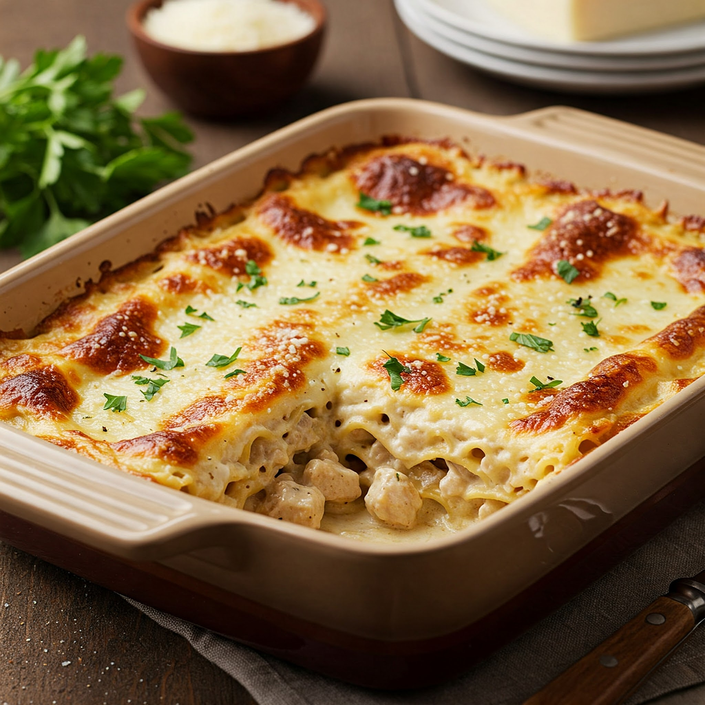

Chicken Alfredo Lasagna
Ingredients
- 200g cooked chicken (shredded or diced)
- 6 lasagna sheets
- 2 tbsp butter
- 2 tbsp all-purpose flour
- 2 cups milk
- 1/2 cup grated cheese (mozzarella or cheddar)
- 1/2 cup cream
- 1/2 tsp garlic powder or minced garlic
- Salt and pepper to taste
- Mixed herbs or oregano (optional)
- Chopped parsley for garnish (optional)
Steps
- Boil lasagna sheets as per packet instructions. Drain and keep aside.
- In a pan, melt butter and add flour. Stir for a minute to make a roux.
- Gradually add milk, whisking to avoid lumps. Cook until slightly thickened.
- Add cream, garlic, cheese, salt, pepper, and herbs. Mix until smooth to form Alfredo sauce.
- Preheat oven to 180°C. Grease a baking dish.
- Layer: Alfredo sauce, lasagna sheet, chicken, more sauce. Repeat layers.
- Top with extra cheese and bake for 20–25 minutes or until golden and bubbly.
- Let it rest for 5 minutes, garnish with parsley, and serve warm!